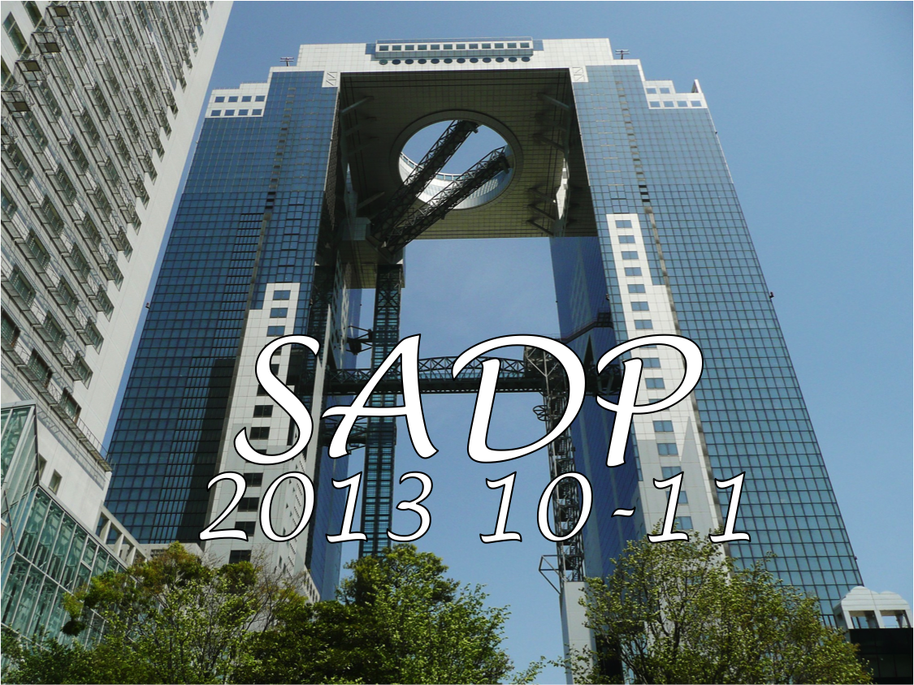
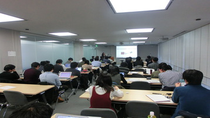
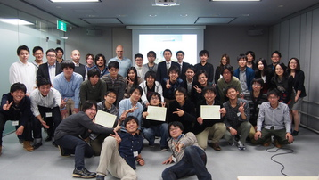

About
Outline
- SADPとは、京都大学情報学研究科 社会情報学専攻で開催されたShajo App Development Projectです
Project Duration
-
2013年10月1日〜11月30日
-
11月30日の発表会までにiPhoneアプリは申請を、AndroidアプリはPlayストア登録まで行う
-
発表会の様子@梅田スカイビル


Participants
- 京都大学情報学研究科 社会情報学専攻の有志21名(3人*3チーム + 4人*3チームの計6チーム)
Meaning
-
同じ情報系院生でもプログラミング出来る人、出来ない人がいます。
前期の講義で全員がWebアプリを実装しますが、やはりスキルには差がありました。
そういった中で、プログラミング出来る人と出来ない人が一緒にチームを組んで、
流行りのスマートフォンアプリを創り上げて見せよう！というチャレンジングなプロジェクトです。
本業である研究や、始まりつつある就職活動、バイト、インターンなどで忙しい中、
チームでコミュニケーションを取りながら、完成を目指しました。
-
プログラミング出来る人は開発やPMを担当し、プログラミングが出来ない人は開発に挑戦したり、デザインを担当する
-
普段は出来ないチーム開発で、限られた期間内で完成させるという経験
昨年度はこちら